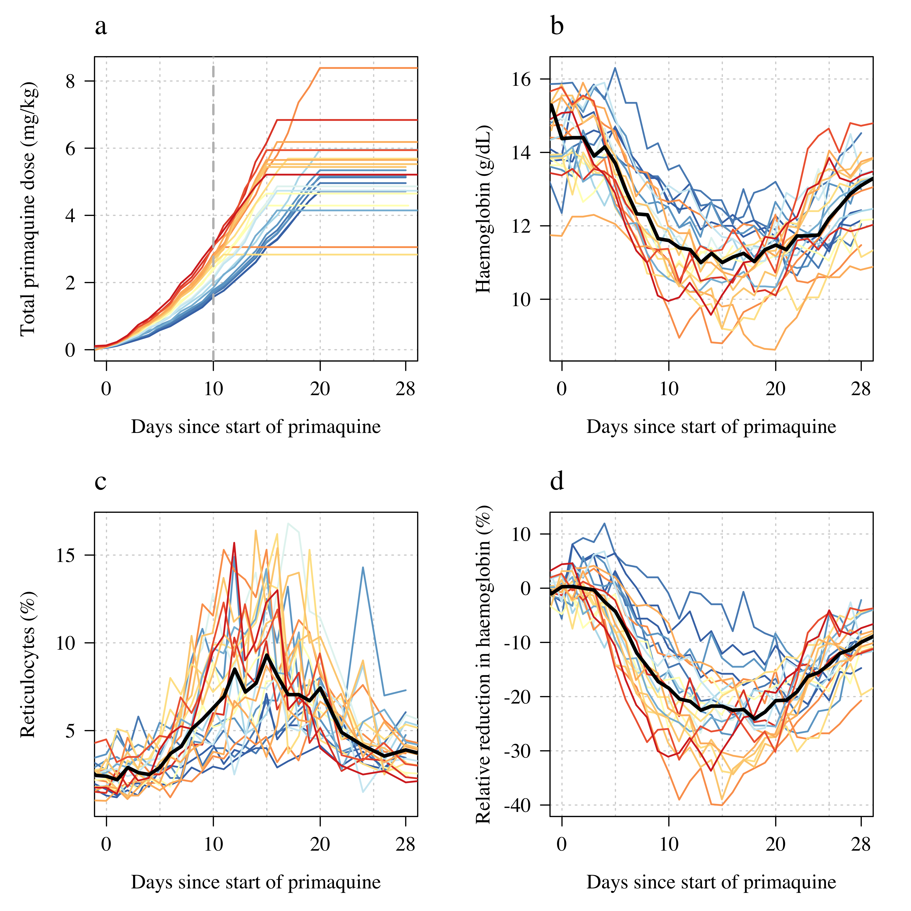
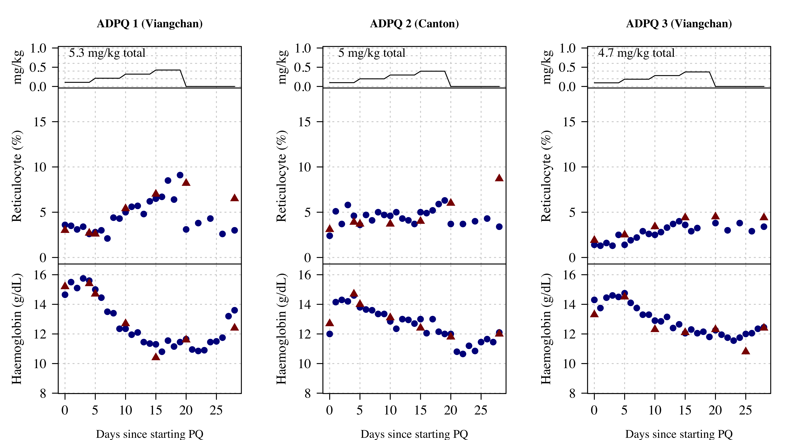
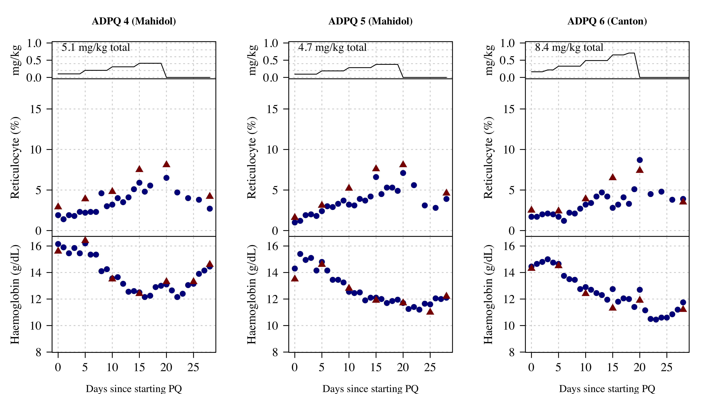
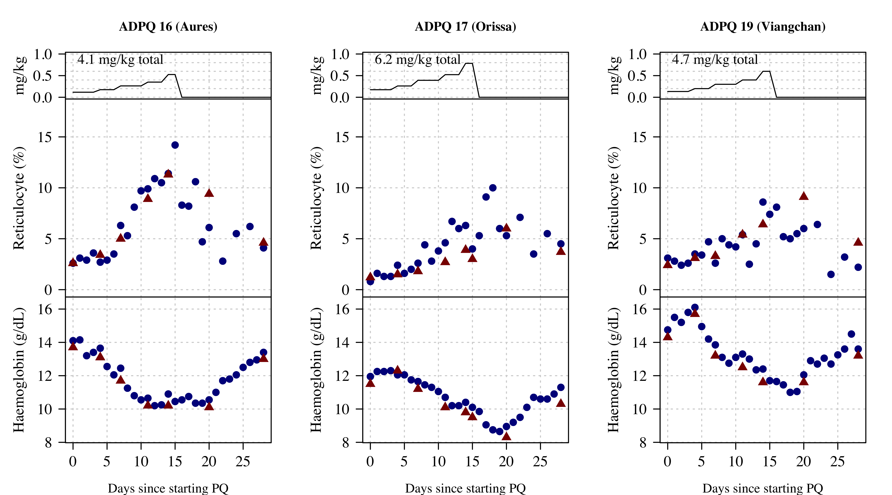
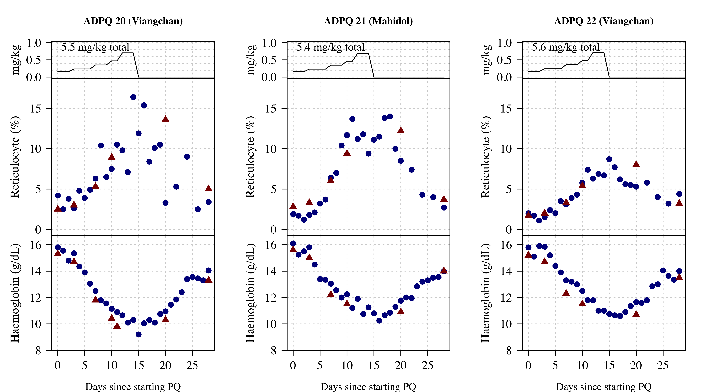
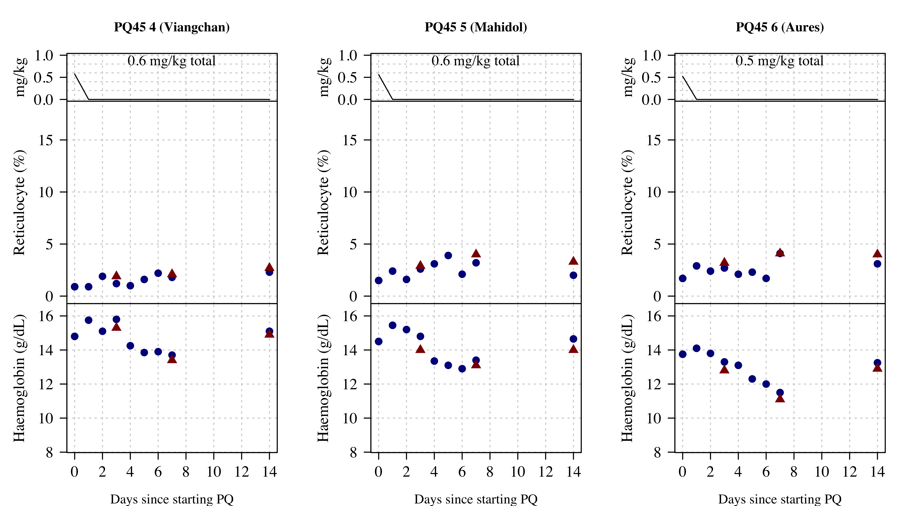
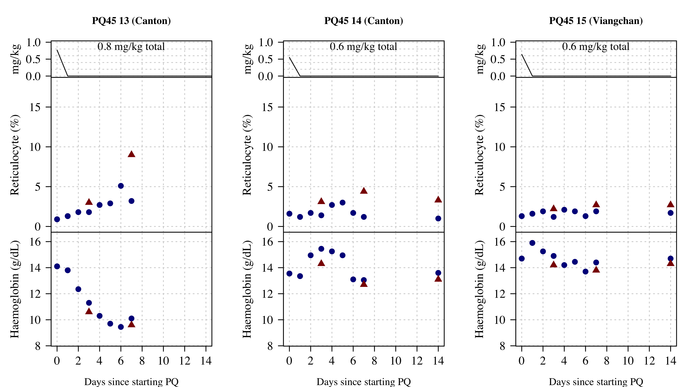
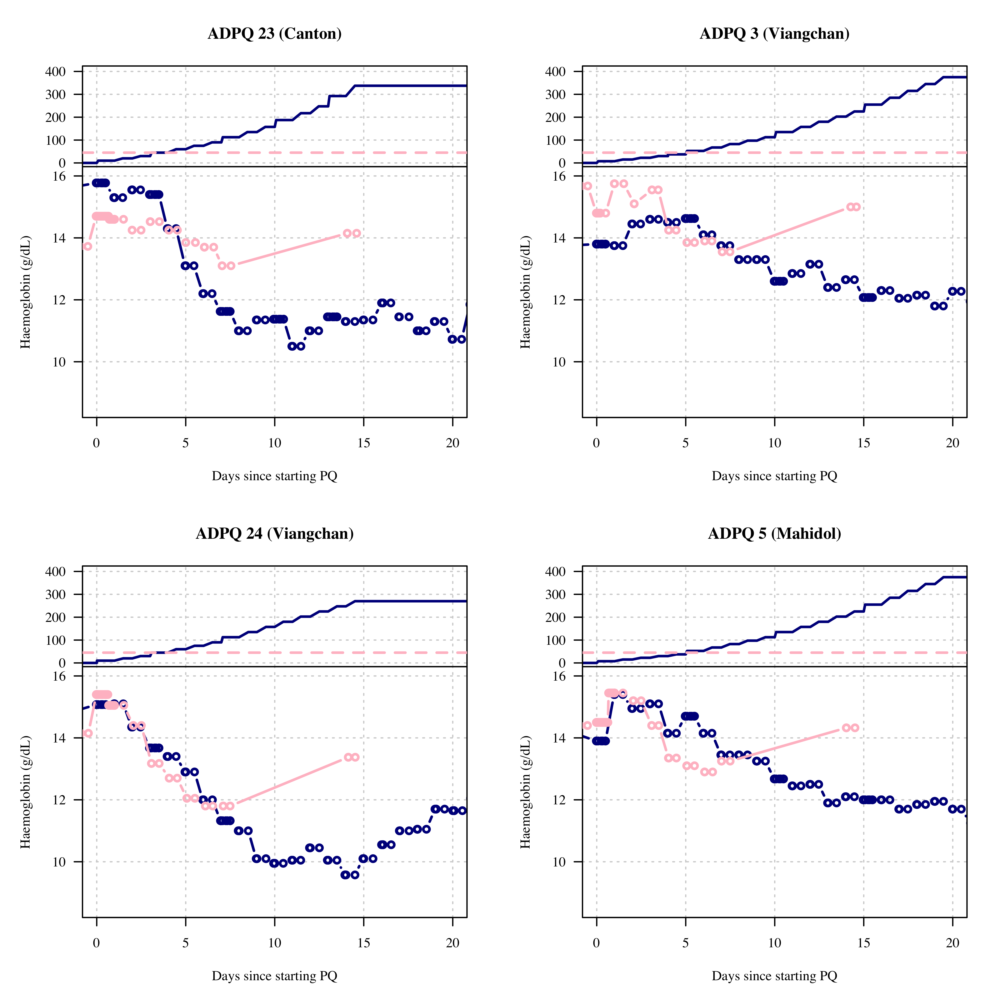
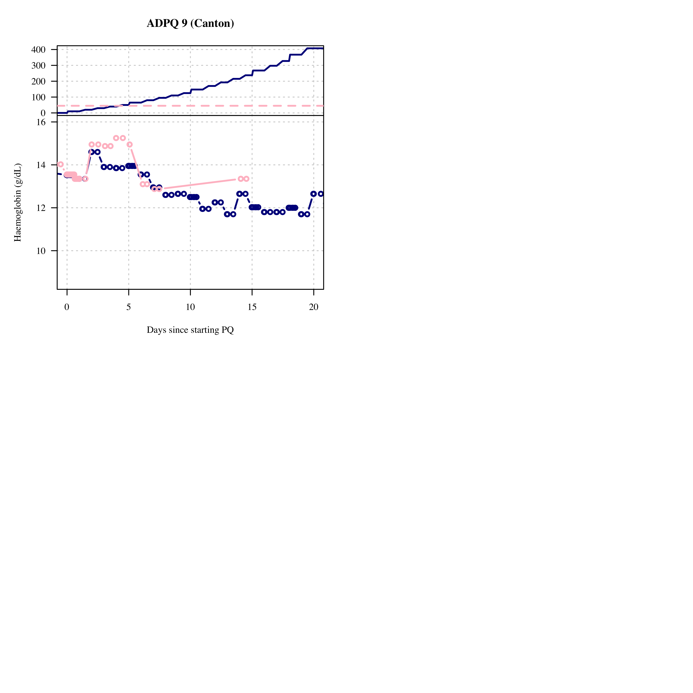

── Attaching packages ─────────────────────────────────────── tidyverse 1.3.2 ──
✔ ggplot2 3.4.0 ✔ dplyr 1.0.10
✔ tibble 3.1.8 ✔ stringr 1.5.0
✔ tidyr 1.2.1 ✔ forcats 0.5.2
✔ purrr 0.3.5
── Conflicts ────────────────────────────────────────── tidyverse_conflicts() ──
✖ dplyr::filter() masks stats::filter()
✖ dplyr::lag() masks stats::lag()Primaquine challenge studies
Load all data
Endpoint definitions
See SAP where these are outlined.
We compute all endpoints and exposure summaries for all subjects in both sub-studies
Table 1
Baseline characteristics
G6PD variants`summarise()` has grouped output by 'study'. You can override using the
`.groups` argument.# A tibble: 14 × 3
# Groups: study [2]
study G6PD_variant n
<chr> <chr> <int>
1 Part1 Aures 1
2 Part1 Canton 4
3 Part1 Chinese-4 1
4 Part1 Mahidol 4
5 Part1 Orissa 1
6 Part1 Union 1
7 Part1 Viangchan 12
8 Part2 Aures 1
9 Part2 Canton 3
10 Part2 Kaiping 1
11 Part2 Mahidol 2
12 Part2 Orissa 1
13 Part2 Union 2
14 Part2 Viangchan 6# A tibble: 8 × 2
G6PD_variant n
<chr> <int>
1 Aures 2
2 Canton 7
3 Chinese-4 1
4 Kaiping 1
5 Mahidol 6
6 Orissa 2
7 Union 3
8 Viangchan 18Age (years):`summarise()` has grouped output by 'study'. You can override using the
`.groups` argument.# A tibble: 6 × 2
# Groups: study [2]
study Age
<chr> <dbl>
1 Part1 18
2 Part1 32
3 Part1 55
4 Part2 20
5 Part2 34
6 Part2 58# A tibble: 3 × 1
Age
<dbl>
1 18
2 32
3 58Weight (kg):`summarise()` has grouped output by 'study'. You can override using the
`.groups` argument.# A tibble: 6 × 2
# Groups: study [2]
study Weight
<chr> <dbl>
1 Part1 45.9
2 Part1 64.3
3 Part1 85.6
4 Part2 51.6
5 Part2 64.1
6 Part2 86.1# A tibble: 3 × 1
Weight
<dbl>
1 45.9
2 64.3
3 86.1Baseline Hb:`summarise()` has grouped output by 'study'. You can override using the
`.groups` argument.# A tibble: 6 × 2
# Groups: study [2]
study `Baseline Hb`
<chr> <dbl>
1 Part1 11.8
2 Part1 14.3
3 Part1 15.8
4 Part2 12.3
5 Part2 14.2
6 Part2 16.0Baseline retics:`summarise()` has grouped output by 'study'. You can override using the
`.groups` argument.# A tibble: 6 × 2
# Groups: study [2]
study `Baseline Hb`
<chr> <dbl>
1 Part1 1.11
2 Part1 2.37
3 Part1 3.86
4 Part2 0.933
5 Part2 1.60
6 Part2 2.77 # A tibble: 2 × 2
study `Proportion baseline retic >2%`
<chr> <int>
1 Part1 18
2 Part2 3Baseline platelets:`summarise()` has grouped output by 'study'. You can override using the
`.groups` argument.# A tibble: 6 × 2
# Groups: study [2]
study `Baseline platelets`
<chr> <dbl>
1 Part1 190.
2 Part1 286
3 Part1 424.
4 Part2 174
5 Part2 289
6 Part2 412 Baseline WBC:`summarise()` has grouped output by 'study'. You can override using the
`.groups` argument.# A tibble: 6 × 2
# Groups: study [2]
study `Baseline WBC`
<chr> <dbl>
1 Part1 4.75
2 Part1 6.77
3 Part1 9.25
4 Part2 5.20
5 Part2 6.55
6 Part2 8.40Baseline metHb:`summarise()` has grouped output by 'study'. You can override using the
`.groups` argument.# A tibble: 6 × 2
# Groups: study [2]
study `Baseline metHb`
<chr> <dbl>
1 Part1 0
2 Part1 0.500
3 Part1 1.5
4 Part2 0
5 Part2 0.710
6 Part2 1.40 Baseline AST:`summarise()` has grouped output by 'study'. You can override using the
`.groups` argument.# A tibble: 6 × 2
# Groups: study [2]
study `Baseline AST`
<chr> <dbl>
1 Part1 15
2 Part1 22.5
3 Part1 60
4 Part2 14
5 Part2 20.5
6 Part2 36 Baseline ALT:`summarise()` has grouped output by 'study'. You can override using the
`.groups` argument.# A tibble: 6 × 2
# Groups: study [2]
study `Baseline ALT`
<chr> <dbl>
1 Part1 10
2 Part1 25.5
3 Part1 85
4 Part2 11
5 Part2 22
6 Part2 47 Baseline creatinine:`summarise()` has grouped output by 'study'. You can override using the
`.groups` argument.# A tibble: 6 × 2
# Groups: study [2]
study `Baseline creatinine`
<chr> <dbl>
1 Part1 0.780
2 Part1 0.935
3 Part1 1.12
4 Part2 0.700
5 Part2 0.965
6 Part2 1.07 Baseline total bilirubiun:`summarise()` has grouped output by 'study'. You can override using the
`.groups` argument.# A tibble: 6 × 2
# Groups: study [2]
study `Baseline TBR`
<chr> <dbl>
1 Part1 0.300
2 Part1 0.600
3 Part1 1.60
4 Part2 0.300
5 Part2 0.650
6 Part2 1.30 Summary of endpoints and exposures
Nadir haemoglobin and peak retics:`summarise()` has grouped output by 'study'. You can override using the
`.groups` argument.# A tibble: 6 × 3
# Groups: study [2]
study `Min Hb (g/dL)` `Max retic (%)`
<chr> <dbl> <dbl>
1 Part1 8.62 4.15
2 Part1 10.6 10.3
3 Part1 12.1 16.8
4 Part2 9.45 1.65
5 Part2 12.1 3.5
6 Part2 13.7 6.10day 10 dose:`summarise()` has grouped output by 'study'. You can override using the
`.groups` argument.# A tibble: 6 × 2
# Groups: study [2]
study `Day10 PQ`
<chr> <dbl>
1 Part1 1.70
2 Part1 2.62
3 Part1 3.47
4 Part2 NA
5 Part2 NA
6 Part2 NA Haemoglobin falls in ascending dose regimens (median and range):`summarise()` has grouped output by 'study'. You can override using the
`.groups` argument.# A tibble: 6 × 3
# Groups: study [2]
study `Max absolute Hb fall (g/dL)` `Max relative Hb fall (%)`
<chr> <dbl> <dbl>
1 Part1 -5.88 -40.0
2 Part1 -3.71 -26.4
3 Part1 -2.10 -15.2
4 Part2 -4.39 -31.7
5 Part2 -1.77 -12.6
6 Part2 -0.818 -5.97Day of Haemoglobin nadir and reticulocyte peak (median, observed):`summarise()` has grouped output by 'study'. You can override using the
`.groups` argument.# A tibble: 6 × 3
# Groups: study [2]
study `Day of Hb nadir` `Day of reticulocyte peak`
<chr> <drtn> <drtn>
1 Part1 11 days 11 days
2 Part1 16 days 16 days
3 Part1 25 days 20 days
4 Part2 4 days -1 days
5 Part2 6 days 7 days
6 Part2 7 days 14 days Day of Hb_nadir:`summarise()` has grouped output by 'study'. You can override using the
`.groups` argument.# A tibble: 6 × 2
# Groups: study [2]
study `Day Hb nadir`
<chr> <drtn>
1 Part1 11 days
2 Part1 16 days
3 Part1 25 days
4 Part2 4 days
5 Part2 6 days
6 Part2 7 days Day of peak retics:`summarise()` has grouped output by 'study'. You can override using the
`.groups` argument.# A tibble: 6 × 2
# Groups: study [2]
study `Day peak reticulocytes`
<chr> <drtn>
1 Part1 11 days
2 Part1 16 days
3 Part1 20 days
4 Part2 -1 days
5 Part2 7 days
6 Part2 14 days Part 1

Part 2

Dose response part 1
`summarise()` has grouped output by 'study'. You can override using the
`.groups` argument.# A tibble: 6 × 2
# Groups: study [2]
study `Total day 10 dose (mg/kg)`
<chr> <dbl>
1 Part1 1.70
2 Part1 2.62
3 Part1 3.47
4 Part2 NA
5 Part2 NA
6 Part2 NA
Call:
lm(formula = Max_hb_fall_abs ~ Day10_total_PQ, data = PQ_unique)
Residuals:
Min 1Q Median 3Q Max
-1.54708 -0.47996 -0.09139 0.53239 1.32519
Coefficients:
Estimate Std. Error t value Pr(>|t|)
(Intercept) -1.1603 0.7998 -1.451 0.162
Day10_total_PQ -1.0779 0.3056 -3.527 0.002 **
---
Signif. codes: 0 '***' 0.001 '**' 0.01 '*' 0.05 '.' 0.1 ' ' 1
Residual standard error: 0.8274 on 21 degrees of freedom
(16 observations deleted due to missingness)
Multiple R-squared: 0.372, Adjusted R-squared: 0.3421
F-statistic: 12.44 on 1 and 21 DF, p-value: 0.002002
Call:
lm(formula = Max_hb_fall_rel ~ Day10_total_PQ, data = PQ_unique)
Residuals:
Min 1Q Median 3Q Max
-9.203 -2.278 -0.607 3.344 7.611
Coefficients:
Estimate Std. Error t value Pr(>|t|)
(Intercept) -8.264 4.556 -1.814 0.084007 .
Day10_total_PQ -7.389 1.741 -4.244 0.000362 ***
---
Signif. codes: 0 '***' 0.001 '**' 0.01 '*' 0.05 '.' 0.1 ' ' 1
Residual standard error: 4.713 on 21 degrees of freedom
(16 observations deleted due to missingness)
Multiple R-squared: 0.4618, Adjusted R-squared: 0.4361
F-statistic: 18.02 on 1 and 21 DF, p-value: 0.0003621
Call:
lm(formula = Rate_Hb_fall ~ Day10_total_PQ, data = PQ_unique)
Residuals:
Min 1Q Median 3Q Max
-0.253285 -0.073131 -0.001941 0.087063 0.172848
Coefficients:
Estimate Std. Error t value Pr(>|t|)
(Intercept) 0.26463 0.11455 2.310 0.0311 *
Day10_total_PQ 0.05555 0.04378 1.269 0.2183
---
Signif. codes: 0 '***' 0.001 '**' 0.01 '*' 0.05 '.' 0.1 ' ' 1
Residual standard error: 0.1185 on 21 degrees of freedom
(16 observations deleted due to missingness)
Multiple R-squared: 0.07123, Adjusted R-squared: 0.027
F-statistic: 1.61 on 1 and 21 DF, p-value: 0.2183
Call:
lm(formula = Max_hb_fall_abs ~ Total_PQ, data = PQ_unique[ind_part2,
])
Residuals:
Min 1Q Median 3Q Max
-2.1643 -0.7414 0.1599 0.8459 1.1696
Coefficients:
Estimate Std. Error t value Pr(>|t|)
(Intercept) -0.2914 1.6354 -0.178 0.861
Total_PQ -2.5174 2.3397 -1.076 0.300
Residual standard error: 0.9763 on 14 degrees of freedom
Multiple R-squared: 0.07638, Adjusted R-squared: 0.01041
F-statistic: 1.158 on 1 and 14 DF, p-value: 0.3001
Call:
lm(formula = Max_hb_fall_rel ~ Total_PQ, data = PQ_unique[ind_part2,
])
Residuals:
Min 1Q Median 3Q Max
-16.053 -4.405 1.522 5.735 7.085
Coefficients:
Estimate Std. Error t value Pr(>|t|)
(Intercept) -1.503 11.049 -0.136 0.894
Total_PQ -18.437 15.806 -1.166 0.263
Residual standard error: 6.596 on 14 degrees of freedom
Multiple R-squared: 0.08858, Adjusted R-squared: 0.02348
F-statistic: 1.361 on 1 and 14 DF, p-value: 0.2629
Call:
lm(formula = Rate_Hb_fall ~ Total_PQ, data = PQ_unique[ind_part2,
])
Residuals:
Min 1Q Median 3Q Max
-0.22149 -0.12448 -0.00998 0.11223 0.34119
Coefficients:
Estimate Std. Error t value Pr(>|t|)
(Intercept) 0.07061 0.27725 0.255 0.803
Total_PQ 0.39546 0.39665 0.997 0.336
Residual standard error: 0.1655 on 14 degrees of freedom
Multiple R-squared: 0.0663, Adjusted R-squared: -0.0003975
F-statistic: 0.994 on 1 and 14 DF, p-value: 0.3357
Additional predictive models
Call:
lm(formula = Max_hb_fall_abs ~ Day10_total_PQ + Baseline_Retic +
Baseline_Hb, data = PQ_unique[!ind_part2, ])
Residuals:
Min 1Q Median 3Q Max
-1.2131 -0.3828 0.1276 0.4243 0.8019
Coefficients:
Estimate Std. Error t value Pr(>|t|)
(Intercept) 8.03062 2.28933 3.508 0.002353 **
Day10_total_PQ -1.07879 0.23332 -4.624 0.000185 ***
Baseline_Retic -0.09571 0.25732 -0.372 0.714049
Baseline_Hb -0.62491 0.17410 -3.589 0.001955 **
---
Signif. codes: 0 '***' 0.001 '**' 0.01 '*' 0.05 '.' 0.1 ' ' 1
Residual standard error: 0.6139 on 19 degrees of freedom
Multiple R-squared: 0.6872, Adjusted R-squared: 0.6378
F-statistic: 13.92 on 3 and 19 DF, p-value: 4.902e-05
Call:
lm(formula = Max_hb_fall_rel ~ Day10_total_PQ + Baseline_Retic +
Baseline_Hb, data = PQ_unique[!ind_part2, ])
Residuals:
Min 1Q Median 3Q Max
-8.3484 -2.7737 0.8818 2.7374 5.8462
Coefficients:
Estimate Std. Error t value Pr(>|t|)
(Intercept) 28.7182 15.9513 1.800 0.087701 .
Day10_total_PQ -7.4178 1.6257 -4.563 0.000213 ***
Baseline_Retic -0.5035 1.7929 -0.281 0.781886
Baseline_Hb -2.4909 1.2131 -2.053 0.054066 .
---
Signif. codes: 0 '***' 0.001 '**' 0.01 '*' 0.05 '.' 0.1 ' ' 1
Residual standard error: 4.277 on 19 degrees of freedom
Multiple R-squared: 0.5989, Adjusted R-squared: 0.5356
F-statistic: 9.458 on 3 and 19 DF, p-value: 0.0004903comparing both studies

Daily falls
`summarise()` has grouped output by 'label'. You can override using the
`.groups` argument.
`summarise()` has grouped output by 'label'. You can override using the
`.groups` argument.
A total of 13 subjects in ascending dose had greater than 1 g/dL decrease over subsequent visits`summarise()` has grouped output by 'label'. You can override using the
`.groups` argument.


Individual data











patients who got both




drop in haemoglobin once PQ was stopped
Liver toxicity
Normalised increases:


Look at the dose-reponse for liver tox
Call:
lm(formula = Max_ALT_increase ~ Day10_total_PQ, data = PQ_unique[ind_part1,
])
Residuals:
Min 1Q Median 3Q Max
-1.2014 -0.8010 -0.4291 0.5510 2.7849
Coefficients:
Estimate Std. Error t value Pr(>|t|)
(Intercept) 0.5197 1.0565 0.492 0.628
Day10_total_PQ 0.3650 0.4037 0.904 0.376
Residual standard error: 1.093 on 21 degrees of freedom
Multiple R-squared: 0.03747, Adjusted R-squared: -0.008368
F-statistic: 0.8174 on 1 and 21 DF, p-value: 0.3762
Call:
lm(formula = Max_AST_increase ~ Day10_total_PQ, data = PQ_unique[ind_part1,
])
Residuals:
Min 1Q Median 3Q Max
-0.9996 -0.6464 -0.1407 0.4982 2.3084
Coefficients:
Estimate Std. Error t value Pr(>|t|)
(Intercept) 0.96391 0.82629 1.167 0.256
Day10_total_PQ 0.01531 0.31575 0.049 0.962
Residual standard error: 0.8548 on 21 degrees of freedom
Multiple R-squared: 0.000112, Adjusted R-squared: -0.0475
F-statistic: 0.002352 on 1 and 21 DF, p-value: 0.9618
Call:
lm(formula = Max_Creat_increase ~ Day10_total_PQ, data = PQ_unique[ind_part1,
])
Residuals:
Min 1Q Median 3Q Max
-0.09604 -0.08927 -0.04754 0.08608 0.28688
Coefficients:
Estimate Std. Error t value Pr(>|t|)
(Intercept) 0.081745 0.103838 0.787 0.440
Day10_total_PQ 0.004239 0.039680 0.107 0.916
Residual standard error: 0.1074 on 21 degrees of freedom
Multiple R-squared: 0.0005431, Adjusted R-squared: -0.04705
F-statistic: 0.01141 on 1 and 21 DF, p-value: 0.9159
Call:
lm(formula = Max_TBR_increase ~ Day10_total_PQ, data = PQ_unique[ind_part1,
])
Residuals:
Min 1Q Median 3Q Max
-1.32093 -0.24384 0.03174 0.24537 1.85803
Coefficients:
Estimate Std. Error t value Pr(>|t|)
(Intercept) 0.5735 0.5947 0.964 0.346
Day10_total_PQ 0.3762 0.2273 1.655 0.113
Residual standard error: 0.6153 on 21 degrees of freedom
Multiple R-squared: 0.1154, Adjusted R-squared: 0.07329
F-statistic: 2.74 on 1 and 21 DF, p-value: 0.1127Subject 11